Manual Book AIna DealDrive
Panduan langkah demi langkah memakai aplikasi AIna DealDrive.
Tentang manual ini
Manual ini menjelaskan cara memakai AIna DealDrive. Versi ini baru memuat panduan untuk Sales. Panduan untuk Supervisor dan Branch Manager akan ditambahkan pada versi berikutnya.
Setiap ada fitur baru atau perubahan, nomor versi manual dinaikkan dan perubahannya dicatat di bagian Riwayat versi. Pastikan Anda membaca versi terbaru.
Semua nama pelanggan, nomor telepon, dan angka pada gambar adalah data contoh. Tampilan di akun Anda menampilkan data pelanggan Anda sendiri.
Klik gambar mana pun untuk membukanya dalam ukuran penuh.
Sales
1. Masuk & akun
Aktivasi akun pertama kali
Akun Sales dibuat oleh Admin dealer melalui undangan. Anda akan menerima tautan aktivasi. Buka tautan itu dan buat password Anda sendiri. Username dibuat otomatis oleh sistem dari nama Anda; username ini yang dipakai untuk masuk.
Masuk ke aplikasi
- Buka alamat aplikasi di browser komputer atau ponsel.
- Isi Username (bukan email) dan Password.
- Centang Ingat saya bila memakai perangkat pribadi.
- Klik Masuk.
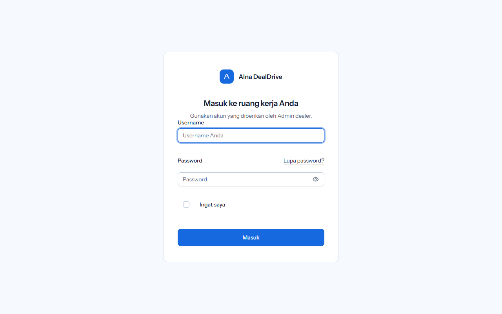
Lupa password
Di halaman masuk, klik Lupa password?. Isi email akun Anda, lalu klik Kirim tautan atur ulang password. Buka email tersebut dan ikuti tautannya untuk membuat password baru.
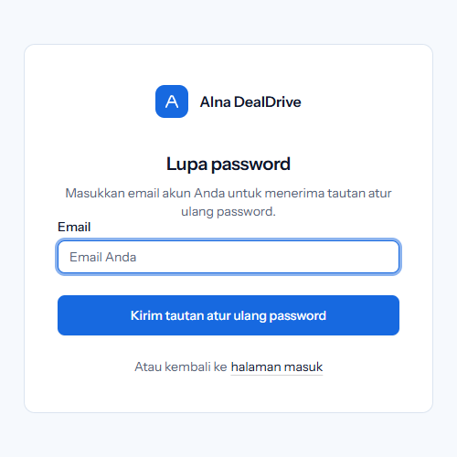
Menu pengguna, tema, dan keluar
Klik nama Anda di pojok kanan atas untuk membuka menu pengguna. Dari sini Anda dapat:
- Profil: mengubah nama dan email, mengganti password, dan mengatur tampilan.
- Tema: Terang, Gelap, atau mengikuti Sistem.
- Ukuran: memperbesar tulisan (Normal, Besar, Ekstra).
- Warna: memilih warna aksen aplikasi.
- Keluar: keluar dari akun. Selalu keluar bila memakai perangkat bersama.
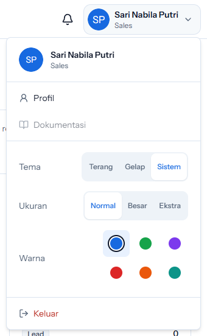
Mengganti password
Buka Profil lalu tab Security. Untuk keamanan, aplikasi meminta Anda memasukkan password sekali lagi sebelum halaman ini terbuka. Isi password lama, password baru, dan konfirmasinya, lalu klik Save.
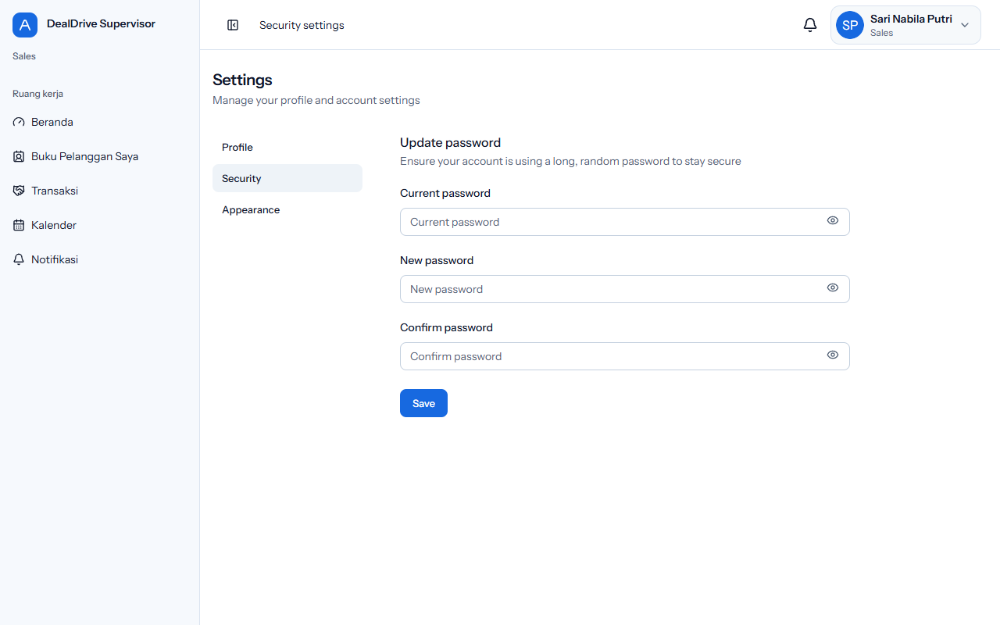
3. Beranda
Beranda menampilkan kinerja Anda pada satu bulan. Pilih bulan di Periode laporan, lalu klik Tampilkan.
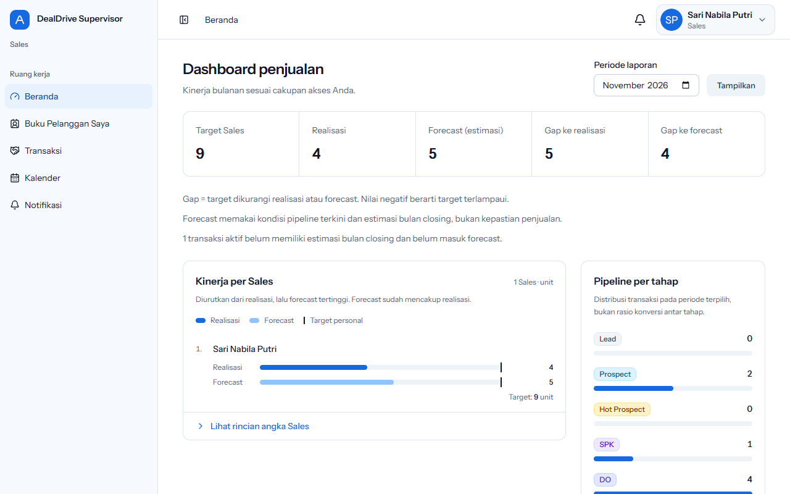
| Angka | Arti |
|---|---|
| Target Sales | Target unit pribadi Anda untuk bulan tersebut. |
| Realisasi | Jumlah transaksi yang mencapai tahap DO pada bulan tersebut. |
| Forecast (estimasi) | Perkiraan hasil akhir bulan: realisasi ditambah peluang dari transaksi aktif yang estimasi bulan closing-nya di bulan itu. Ini perkiraan, bukan kepastian penjualan. |
| Gap ke realisasi / forecast | Target dikurangi realisasi atau forecast. Angka negatif berarti target sudah terlampaui. |
Transaksi aktif yang belum punya estimasi bulan closing tidak dihitung dalam forecast. Isi estimasi ini agar perkiraan Anda akurat (lihat bagian 8).
Di bawahnya ada grafik Kinerja per Sales, Pipeline per tahap, dan Kontributor forecast teratas. Bagian Prioritas tindak lanjut menunjukkan hal yang perlu segera dikerjakan:
- Transaksi stagnan: transaksi aktif yang lebih dari 3 hari tidak ada aktivitas.
- Komentar belum dibaca: arahan coaching dari Supervisor yang belum Anda buka.
- Peluang closing periode ini: transaksi yang diperkirakan closing pada bulan terpilih.
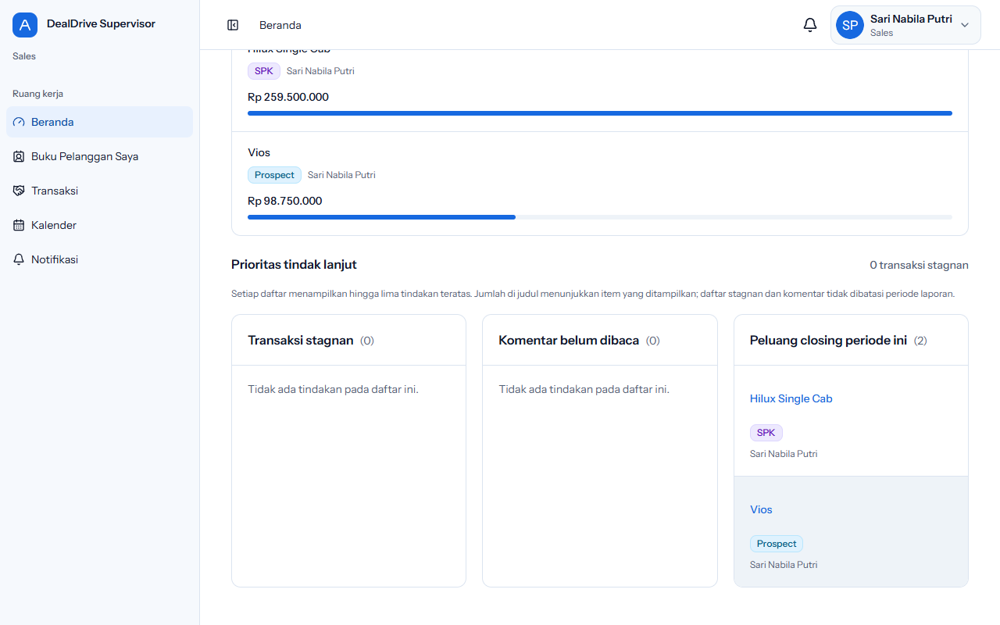
4. Buku Pelanggan Saya
Buku Pelanggan Saya adalah buku telepon kerja Anda. Isinya hanya pelanggan yang menjadi tanggung jawab Anda. Data pelanggan adalah milik dealer, sehingga tidak dapat diekspor massal.
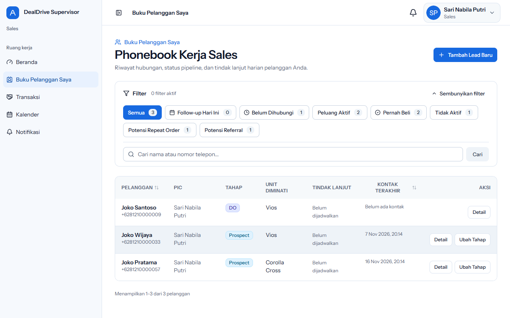
Mencari dan memfilter
- Klik salah satu filter cepat: Follow-up Hari Ini, Belum Dihubungi, Peluang Aktif, Pernah Beli, Tidak Aktif, Potensi Repeat Order, atau Potensi Referral. Angka di sampingnya adalah jumlah pelanggan.
- Ketik nama atau nomor telepon di kolom pencarian, lalu klik Cari.
- Klik judul kolom Pelanggan atau Kontak terakhir untuk mengurutkan.
Tombol pada setiap pelanggan
- Detail: membuka detail transaksi pelanggan (lihat bagian 7).
- Ubah Tahap: langsung membuka formulir ubah tahap (lihat bagian 8).
- Di ponsel juga tersedia Catat Aktivitas dan Follow-Up agar laporan dari lapangan cepat dicatat.
Klik Tambah Lead Baru untuk mendaftarkan calon pelanggan baru.
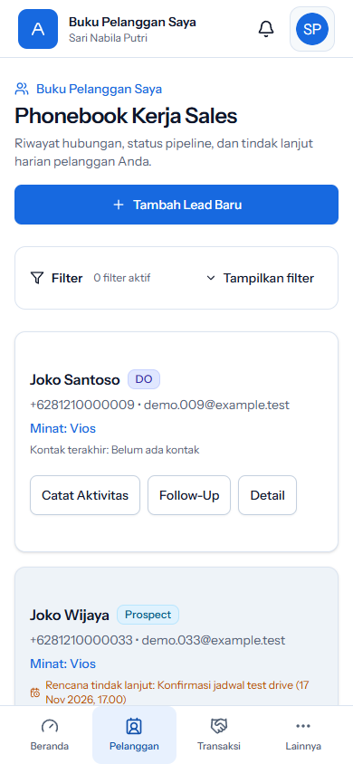
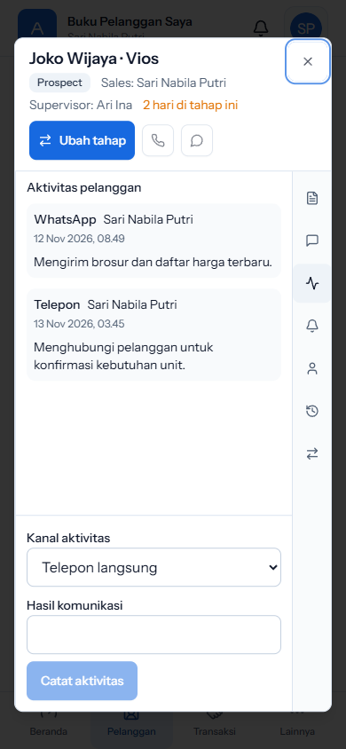
5. Membuat lead baru
Buka dari Tambah Lead Baru di Buku Pelanggan Saya atau Tambah transaksi di halaman Transaksi. Lead baru otomatis menjadi tanggung jawab Anda, dan Supervisor tim Anda tercantum di formulir.
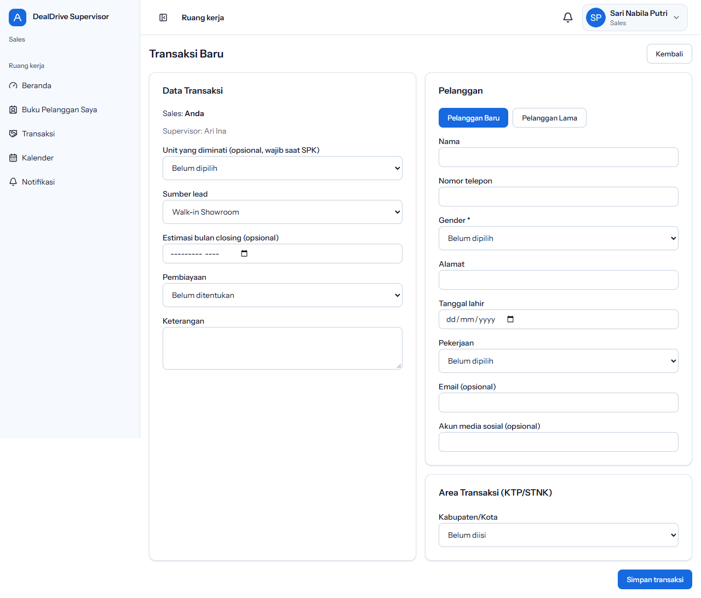
Langkah
- Data Transaksi: pilih Unit yang diminati (boleh dikosongkan dulu, tetapi wajib saat SPK), Sumber lead, Estimasi bulan closing bila sudah diketahui, Pembiayaan (Cash/Kredit), dan Keterangan. Bila sumbernya Iklan Digital / Medsos, pilih juga kanal digitalnya.
- Pelanggan: pilih Pelanggan Baru untuk orang yang belum pernah terdaftar, atau Pelanggan Lama untuk mencari pelanggan yang sudah ada.
- Untuk pelanggan baru, isi Nama, Nomor telepon, dan Gender (wajib). Alamat, tanggal lahir, pekerjaan, email, dan media sosial boleh dilengkapi kemudian.
- Isi Area Transaksi (KTP/STNK) bila sudah diketahui.
- Klik Simpan transaksi.
Peringatan nomor telepon sudah terdaftar
Bila nomor telepon sudah dipakai pelanggan lain, aplikasi tidak menyimpan dan menampilkan peringatan. Klik Cari sebagai Pelanggan Lama untuk memeriksa pelanggan tersebut dan membuat transaksi baru di bawah pelanggan yang sudah ada. Ini mencegah data pelanggan ganda.
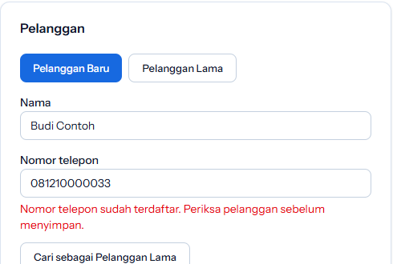
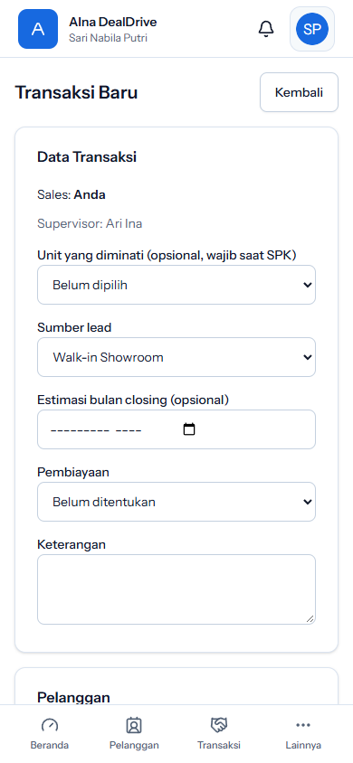
6. Daftar Transaksi
Halaman Transaksi menampilkan semua transaksi Anda. Satu pelanggan bisa memiliki lebih dari satu transaksi, misalnya saat membeli unit kedua.
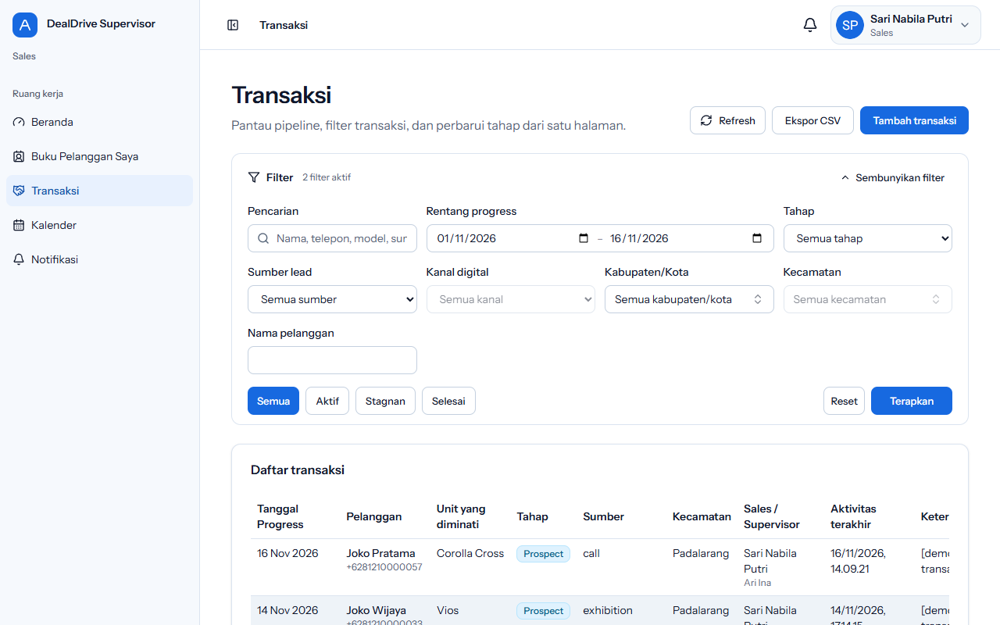
Memfilter
- Gunakan Pencarian, Rentang progress (tanggal), Tahap, Sumber lead, Kanal digital, Kabupaten/Kota, Kecamatan, dan Nama pelanggan.
- Tombol Semua, Aktif, Stagnan, dan Selesai mempersempit daftar berdasarkan status.
- Klik Terapkan untuk menjalankan filter, atau Reset untuk mengembalikan ke awal.
Membaca daftar
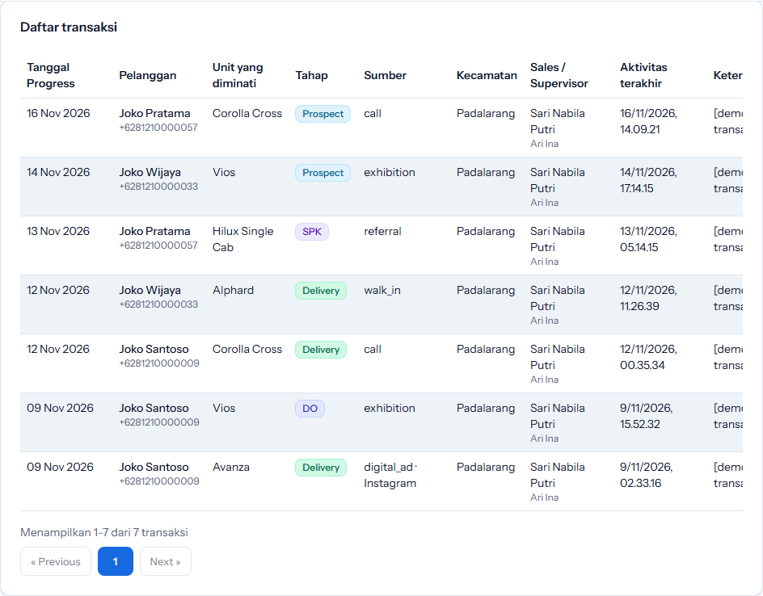
- Tombol Detail (ikon mata) di ujung kanan membuka detail transaksi.
- Tombol Ubah tahap (ikon pensil) membuka formulir ubah tahap.
- Pada transaksi berstatus DO, tombol Konfirmasi Delivery (ikon truk) dipakai saat kendaraan sudah dikirim.
- Ekspor CSV mengunduh daftar transaksi untuk diolah di spreadsheet. Refresh memuat ulang data terbaru.
7. Detail transaksi
Jendela detail transaksi adalah tempat kerja utama Anda. Jendela ini terbuka dari Buku Pelanggan Saya, Transaksi, Beranda, maupun Kalender.
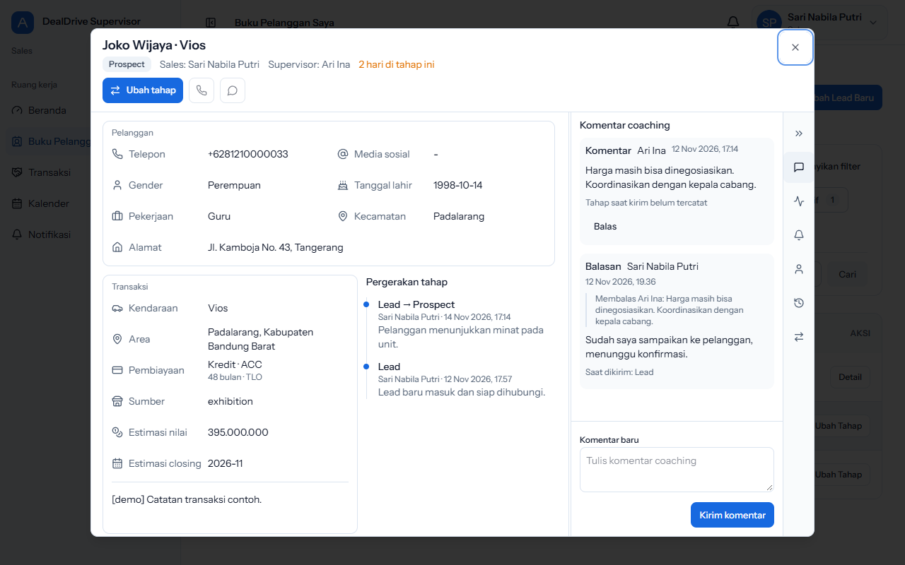
Bagian atas
- Nama pelanggan dan unit, tahap saat ini, nama Sales dan Supervisor, serta lama transaksi berada di tahap ini.
- Ubah tahap: membuka formulir ubah tahap.
- Ikon telepon dan WhatsApp langsung menghubungi pelanggan. Ikon tampak pudar dan tidak bisa diklik bila pelanggan menolak dihubungi lewat kanal tersebut.
Panel kiri: data pelanggan dan transaksi
Kotak Pelanggan dan Transaksi berisi data seperti telepon, gender, pekerjaan, kendaraan, area, pembiayaan, sumber, estimasi nilai, dan estimasi closing. Klik salah satu nilai untuk mengubahnya langsung di tempat. Pergerakan tahap menampilkan riwayat perpindahan tahap beserta catatannya.
Panel kanan: pilih lewat ikon
| Ikon | Kegunaan |
|---|---|
| Komentar | Percakapan coaching dengan Supervisor (lihat bagian 9). |
| Aktivitas | Mencatat hasil kontak dengan pelanggan. |
| Follow-up | Menjadwalkan kontak berikutnya. |
| Pelanggan | Kontak terakhir, PIC, transaksi baru, dan preferensi kontak. |
| Riwayat | Seluruh jejak transaksi pelanggan dalam satu linimasa. |
| Ubah tahap | Memindahkan transaksi ke tahap lain (lihat bagian 8). |
Tombol » di atas ikon melipat panel kanan agar data di kiri lebih lega.
Mencatat aktivitas
- Klik ikon Aktivitas.
- Pilih Kanal aktivitas: Telepon langsung, Chat WhatsApp, Kunjungan rumah / kantor, atau Pertemuan showroom.
- Tulis Hasil komunikasi, lalu klik Catat aktivitas.
Aktivitas memperbarui kontak terakhir pelanggan tanpa mengubah tahap transaksi.
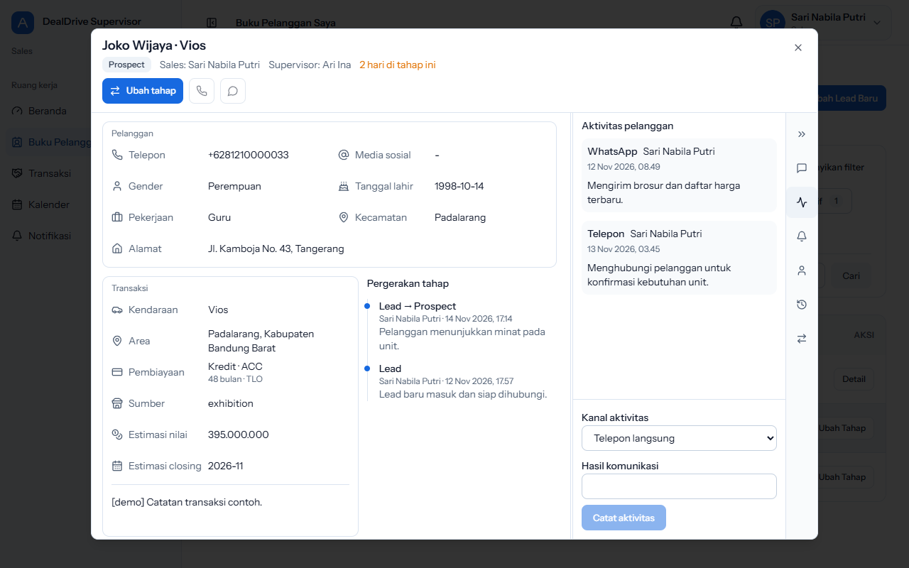
Menjadwalkan follow-up
- Klik ikon Follow-up.
- Isi Waktu follow-up (tanggal dan jam) serta Rencana, misalnya "Konfirmasi jadwal test drive".
- Klik Jadwalkan. Rencana ini muncul di Kalender dan di Buku Pelanggan Saya.
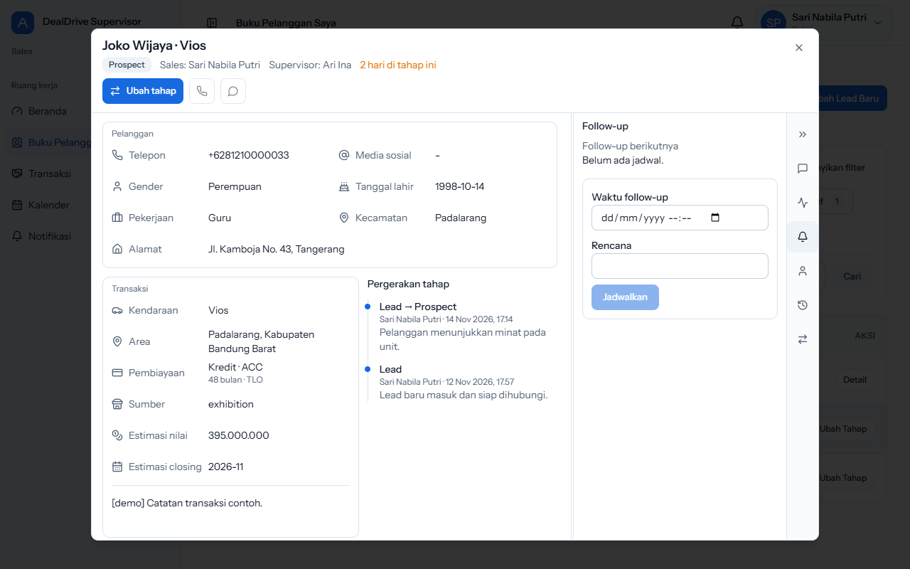
Panel Pelanggan dan preferensi kontak
Panel ini menampilkan tanggal terakhir dihubungi dan PIC Sales. Klik Buat transaksi baru bila pelanggan yang sama ingin membeli unit lain.
Di Preferensi kontak, catat kanal yang disukai pelanggan. Centang Pelanggan menolak dihubungi pada semua kanal bila pelanggan meminta tidak dihubungi lagi, lalu klik Simpan preferensi kontak. Tombol telepon dan WhatsApp akan dinonaktifkan sesuai pilihan ini.
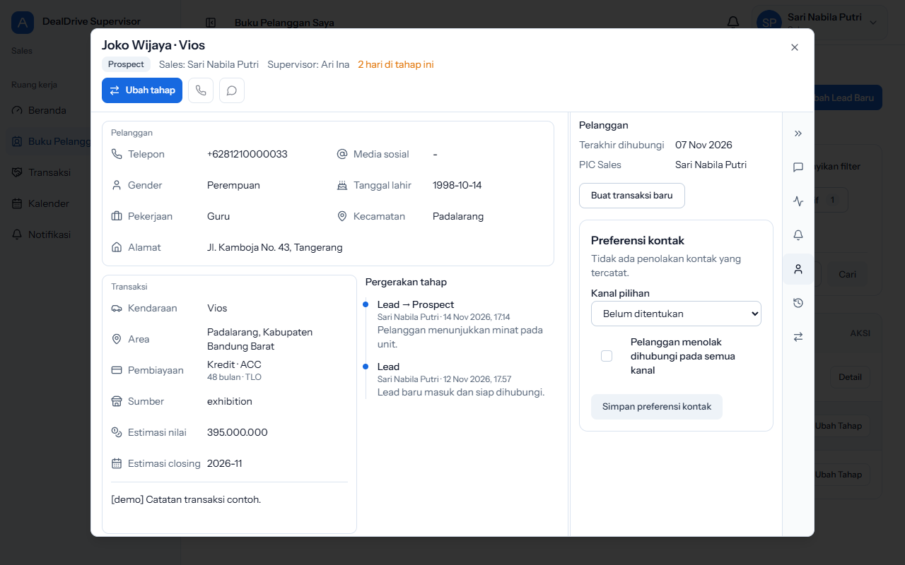
Riwayat
Pilih transaksi di Pilih transaksi untuk melihat linimasa lengkapnya: aktivitas, komentar, balasan, dan perpindahan tahap secara berurutan.
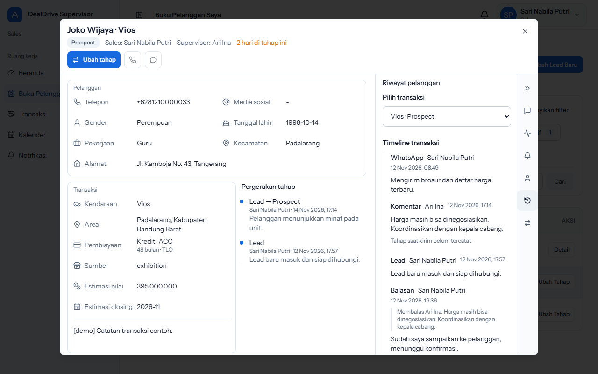
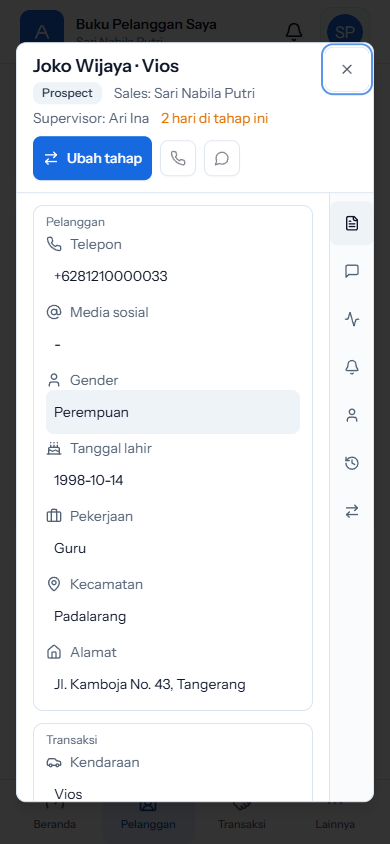
8. Mengubah tahap pipeline
Setiap transaksi bergerak melalui tahap berikut:
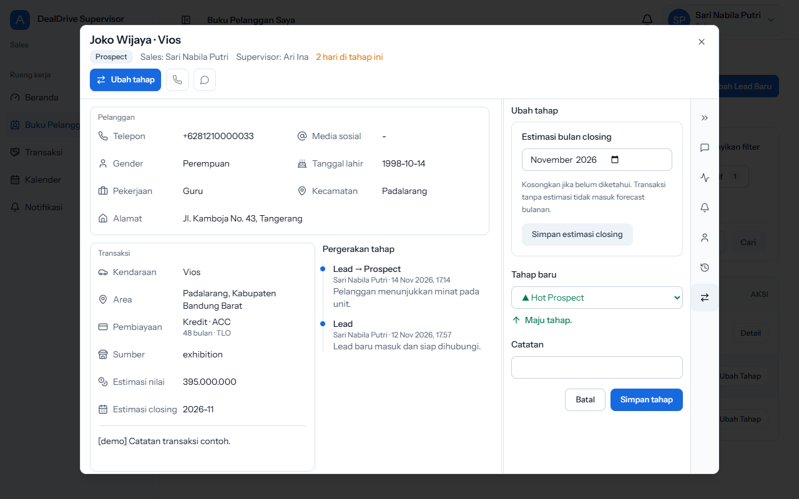
Langkah umum
- Klik Ubah tahap.
- Periksa Estimasi bulan closing. Ubah bila perlu, lalu klik Simpan estimasi closing. Kosongkan bila belum diketahui, tetapi ingat: transaksi tanpa estimasi tidak masuk forecast.
- Pilih Tahap baru. Tanda ▲ berarti maju tahap, ▼ berarti mundur tahap.
- Isi Catatan. Jika mundur tahap, catatan alasan wajib diisi.
- Lengkapi isian tambahan yang muncul (lihat tabel di bawah), lalu klik Simpan tahap.
Syarat setiap tahap
| Tahap tujuan | Yang harus dilengkapi |
|---|---|
| Prospect, Hot Prospect | Gender dan alamat pelanggan. |
| SPK | Gender, alamat, pekerjaan, dan area pelanggan; unit kendaraan; centang Konfirmasi booking fee. |
| DO | Centang ketiga Checklist DO: PO, DP, dan Unit. DO hanya bisa dipilih dari tahap SPK. |
| Delivery | Konfirmasi bahwa kendaraan sudah terkirim (tombol Konfirmasi Delivery). |
| Lost | Pilih Alasan lost: membeli di kompetitor, harga/anggaran belum sesuai, leasing ditolak, tidak merespons follow-up, batal/menunda, atau alasan lainnya. Tambahkan catatan bila perlu. |
Data pelanggan yang belum lengkap dapat diisi langsung di formulir ubah tahap, atau kapan saja di panel kiri.
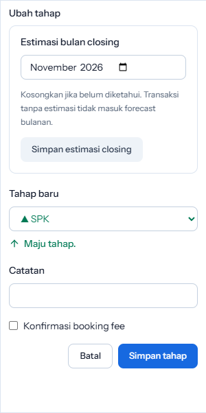
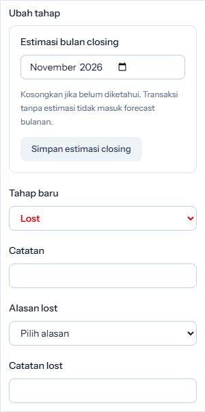
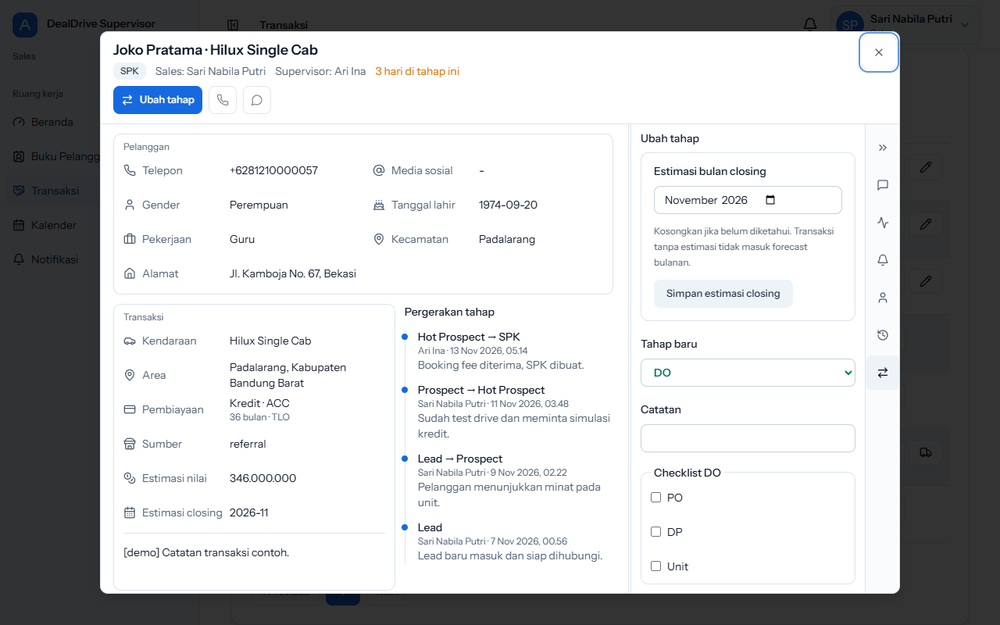
Penting. DO, Delivery, dan Lost adalah tahap selesai. Setelah DO, transaksi hanya dapat dilanjutkan ke Delivery. Transaksi yang sudah Delivery atau Lost terkunci dan tidak dapat diubah lagi. Pembatalan DO hanya dapat dilakukan Admin, sebelum Delivery. Periksa kembali sebelum menyimpan.
9. Komentar coaching
Setiap transaksi punya ruang percakapan antara Anda dan Supervisor. Gunakan untuk melaporkan perkembangan, kendala, atau meminta arahan. Komentar hanya dapat dilihat oleh Sales terkait, Supervisor terkait, dan Admin.
- Buka detail transaksi, lalu klik ikon Komentar.
- Untuk menanggapi arahan Supervisor, klik Balas pada komentarnya.
- Untuk komentar baru, tulis di Komentar baru lalu klik Kirim komentar.
- Setiap komentar mencatat tahap transaksi saat komentar dikirim.
- Komentar Anda masih dapat diperbaiki dalam 5 menit setelah dikirim.
- Komentar baru menghasilkan pemberitahuan di aplikasi dan email. Email tidak memuat isi komentar; buka aplikasi untuk membacanya.
Percakapan ini juga dapat dibuka sebagai halaman penuh beserta linimasa transaksi:
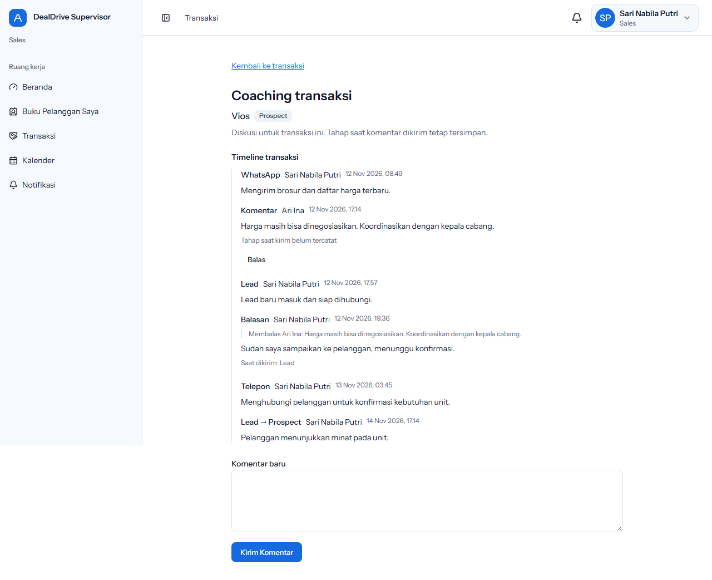
10. Kalender
Kalender menampilkan rencana follow-up dan aktivitas yang sudah Anda catat. Hari Sabtu dan Minggu diberi arsiran.
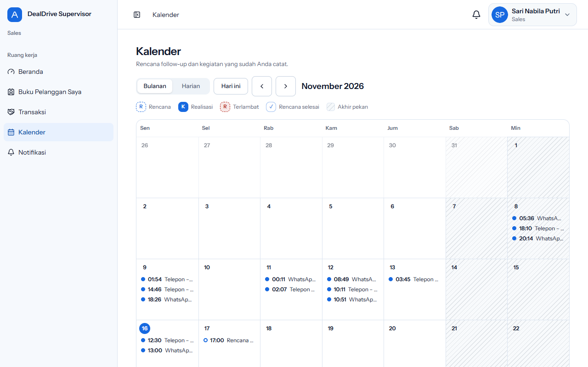
| Tanda | Arti |
|---|---|
| Rencana | Follow-up yang sudah dijadwalkan dan belum dikerjakan. |
| Realisasi | Aktivitas yang sudah dicatat. |
| Terlambat | Rencana yang waktunya sudah lewat tetapi belum dicatat hasilnya. |
| Rencana selesai | Rencana yang hasilnya sudah dicatat. |
- Pilih Bulanan atau Harian. Klik tanggal untuk membuka tampilan harian.
- Gunakan tombol panah untuk berpindah bulan/hari, dan Hari ini untuk kembali ke tanggal sekarang.
Mencatat hasil atau membatalkan follow-up
- Klik sebuah rencana di kalender.
- Pilih Kanal aktivitas dan tulis Hasil komunikasi.
- Klik Simpan & selesaikan. Rencana berubah menjadi selesai dan aktivitas tercatat.
- Bila follow-up tidak jadi dilakukan, klik Batalkan follow-up ini.
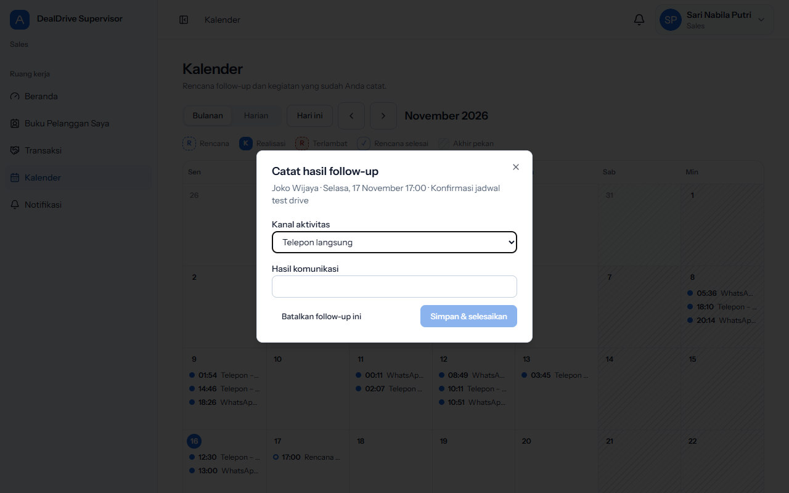
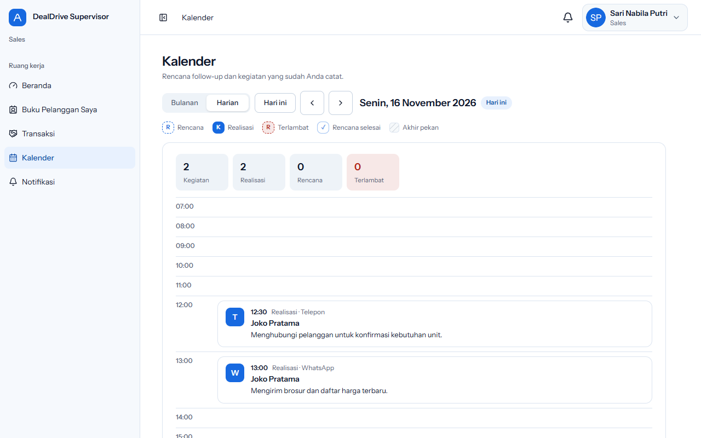
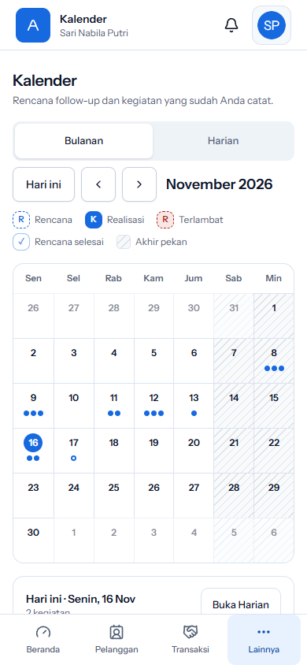
11. Notifikasi
Ikon lonceng di pojok kanan atas menampilkan pemberitahuan terbaru, misalnya komentar coaching baru dari Supervisor. Klik sebuah pemberitahuan untuk membuka transaksinya, atau Lihat semua notifikasi untuk membuka halaman Notifikasi.
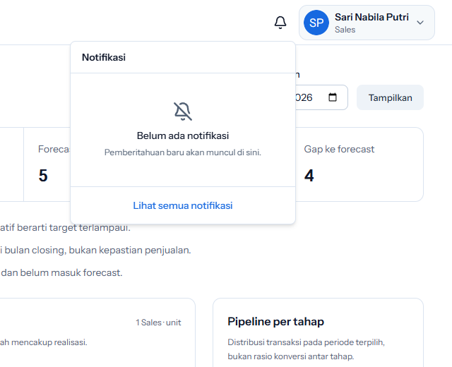
Halaman Notifikasi masih dalam pengembangan. Gunakan ikon lonceng dan bagian Komentar belum dibaca di Beranda untuk memantau pemberitahuan.
12. Lead stagnan & tips harian
Transaksi aktif yang lebih dari 3 hari tidak memiliki aktivitas ditandai stagnan. Transaksi stagnan terlihat oleh Supervisor dan muncul di Beranda serta filter Stagnan di halaman Transaksi.
Rutinitas yang disarankan
- Pagi: buka Beranda. Periksa transaksi stagnan, komentar belum dibaca, dan follow-up hari ini.
- Setelah menghubungi pelanggan: catat aktivitas saat itu juga, langsung dari ponsel.
- Sebelum menutup percakapan: jadwalkan follow-up berikutnya agar tidak lupa.
- Saat ada kemajuan: ubah tahap dan perbarui estimasi bulan closing.
- Saat ragu: tulis komentar coaching untuk meminta arahan Supervisor.
Riwayat versi
| Versi | Tanggal | Versi aplikasi | Perubahan |
|---|---|---|---|
| 1.0.0 | 16 November 2026 | v1.2.2 | Panduan pertama untuk Sales. |